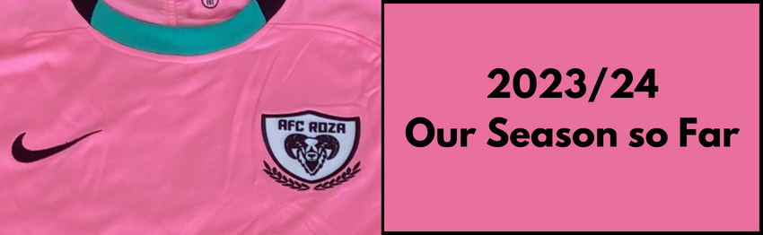
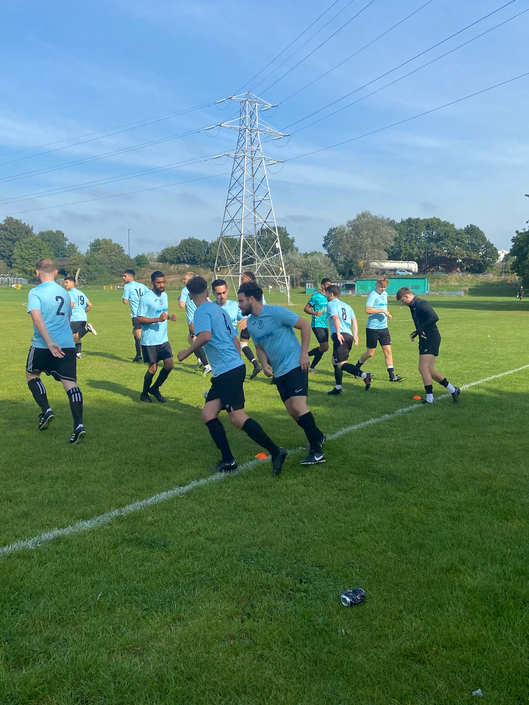
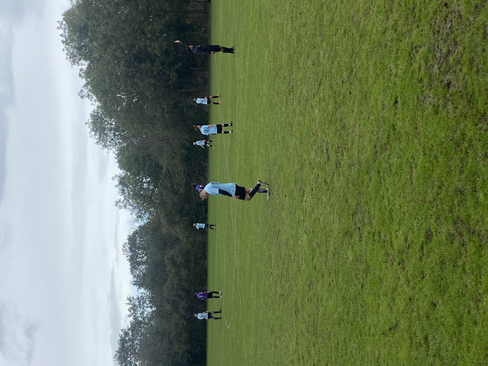
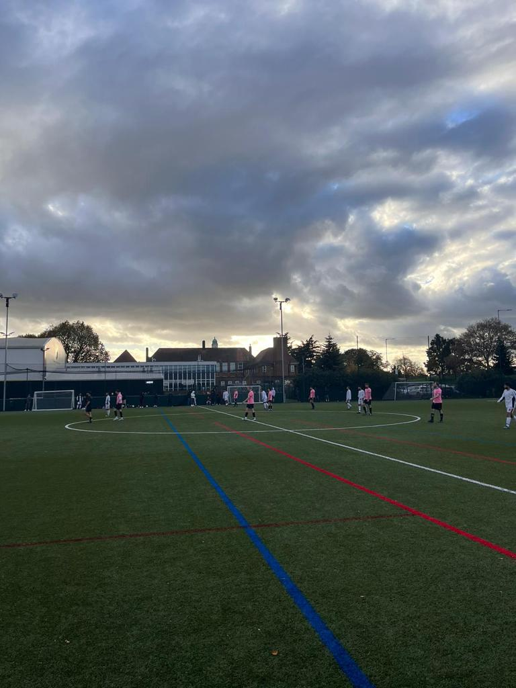
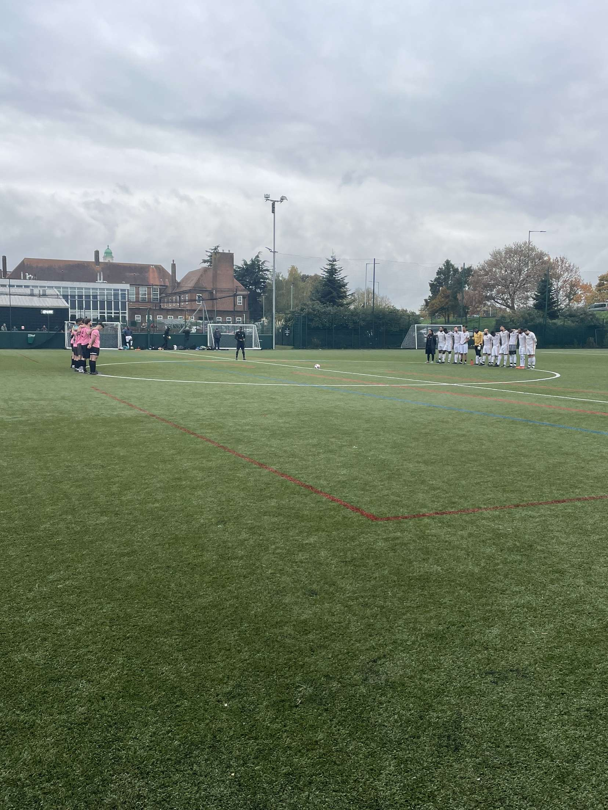

2023/24 - Our Season So Far
After finishing second in our first ever season in Division 6 of the Barnet Sunday Football League, we were handed a sizeable promotion up to Division 1. This entailed a climb from the 8th tier to the 3rd tier of the BSFL pyramid, meaning that we had a big challenge on our hands.
Here’s how we’ve got on so far…

September
After much anticipation, September was upon us and our first fixture was an away one against AFC Rose. This game was to take place at a familiar location for Roza: last season’s home pitch, Aylands Open Space.

In what was a monumental game for the club, the boys started in electrifying fashion and we were 4-0 to the good before the 30-minute mark. Alex Andreou had scored a hat-trick, with Steph Savva scoring the other.
It was at this point that the game became bittersweet. Alex, running riot until that point, was pulled down by the opposing full-back after the whistle was blown, causing him to land awkwardly on his shoulder. He was in lots of discomfort and was taken to hospital, where X-Rays showed he had suffered a broken shoulder.
The boys went on to win the game 7-2, however this event clouded what was an excellent performance on the pitch.
The following week, we faced more familiar opponents in Inter Manresa 24 - the team that had pipped us to the Division 6 title the previous season. This was our first cup game of the season, and we were sadly knocked out of the Roger Jones Cup in a 2-5 home defeat. A poor start from the boys meant we were chasing it throughout, and it was always an uphill task from going 3-0 down to a tough side.
The final fixture of November offered us another reality check, as we suffered to 2-5 home defeats on the trot; this time against Fireside FC. Roza were creating chances for fun at the beginning of the game, however Fireside had their fair share of possession too. Frustratingly, a soft penalty decision went the way of Fireside to put them 1-0 up. Roza continued to create chances after going 0-1 down but a counter attack from a Roza corner led to Fireside’s forward rounding the goalkeeper, and tapping in for 2-0. Before half-time, a Steph Savva penalty meant Roza had hope going in 1-2 down.
In the second half, it become a very feisty affair with the referee struggling to keep control of the game. It was a real battle on the field, and the score stayed at 1-2 until around the 80th minute, where Roza made some attacking changes to try and chase the game. These sadly didn’t pay off with 3 goals being conceded in the last 10 minutes, and Adam Shaw’s finish to make it 4-2 sadly didn’t spark the comeback that we were hoping for.
October
We went into October on the back of two losses, so the boys really needed to start the month well.
The first opponent of October was another familiar one: PS Birlikspor. We had faced this team twice last season, winning once 6-0 and losing the other 4-3 - so we knew that it would not be an easy game. An excellent start to the game from Roza, littered with wasted chances, saw a goal completely against the run of play scored - and we went 1-0 down. A defensive error went punished, however the message from the team was loud and clear: keep playing how we are, and the goals will come.
This prediction came true, and Steph Savva continued his goalscoring form to put us level. Soon after, Danny Smith’s deflected effort found its way into the bottom corner, before Steph added two more to his collection to take home the match ball and confirm a 1-4 away win for The Rose. A job well done!
The following week, a formidable test was upon us against top-of-the-league FC Trent Park. Roza found their feet early and knocked it around with confidence, getting some good shots off and testing the keeper. However, one phase of passing out of the back saw a ball cut out, leaving the FC Trent Park forward to finish into an empty net. Shortly after, a penalty for the home side meant we trailed 2-0 at the break; a scoreline which felt undeserved.
Roza continued to control the ball and create chances after the break, and Steph Savva broke through before being taken down by the goalkeeper. The penalty was converted by Iddo Razin; last season’s AFC Roza top scorer had opened his account for this season.
With around half an hour to go, Roza were pushing for an equaliser, changing the formation to attack more and putting countless balls into the box, but struggling to convert them. With around five minutes to play, a cross from the left hand side was deemed to touch the arm of Jake Koumi, and the penalty was converted, meaning FC Trent Park took home the three points with a 3-1 win.
Back at home against AFC Oakwood, it was a similar story. October was proving to be a month of good performances but without the results to match, and Roza dominated this game, hitting the woodwork and having shots cleared off the line. As the game went on, some bad challenges were going unpunished and we picked up five injuries. Oakwood came back from 2-1 down to score a last minute goal making it 2-3, a real smash-and-grab result for the away side.
A tough month was capped off with a rainy trip to Enfield Grammar School, where South Tottenham United were the hosts. Roza’s pressing and possession play was leading to chance after chance and we finally took the lead through Cal Cook, however the hosts came back and led 2-1 before Sajith Rajaratnam scored from 25 yards to take us into the break at 2-2.

The boys knew that, if chances kept being created at this rate, goals would come - and they were right. Steph Savva got his goal, before Cal added another and substitute Adam Shaw finished off the game, continuing his impressive goals-per-minute ratio. Roza continued our impressive away form in tough conditions, taking home a 2-5 win.
November
November started with a home fixture against PS Birlikspor, and the long-awaited first home win of the season was really needed.

A strong performance from the boys made sure that this was to be the case, and Cal Cook continued his strong form getting on the scoresheet twice; with Chris Johnson getting one from centre-back, and Iddo scoring a direct free-kick off the post.
Birlikspor are always a combative opponent with a feisty edge, but when their player headbutted a member of our squad in the 75th minute, it was clear that they had crossed the line. The referee and players decidede that this was adequate to suspend a game which was already decided, and we took the 4-0 win, albeit on a sour ending.
Next, Inter Manresa 24 were the visitors. We knew that we were in for a tough game against a side who had won all of their games so far this season.

Roza were raring to go, and started excellently: Saj Rajaratnam’s header put us 1-0 up, and Ben Reynolds’ low strike was fumbled by the goalkeeper into the back of the net to make it 2. Roza were dominating a good team and confidence was high.
At the 30-minute mark though, a loss of concentration at the back allowed Manresa to press and win the ball back, and the deficit was sliced in half at 2-1. This proved to be an instrumental moment in the game - it was followed by three quick-fire goals which meant that we were 2-4 down at half-time, with a lot to do.
The second half started well: Ben Reynolds’s second goal pulled it back to 3-4, and we were truly back into the game, fighting for another goal to get us level. The game was in the balance, and Manresa were defending our attacks, with neither team really creating anything. However, when Roza made some attacking substitutions, the skilful attack of Manresa took advantage, scoring two late goals and securing the 3 points with a 3-6 victory. A tough one to take for the boys.
Thankfully, we bounced back the following week with a hard-fought victory against South Tottenham United. This fixture didn’t prove to be as straightforward as the away game was, where we were creating chances every few minutes; and when South Tottenham equalised to make it 1-1 after a Danny Smith goal, Roza were fearing the worst.
Some home pressure luckily broke the STU defence’s resolve when their defender inadvertantly headed into his own net, before Cal Cook’s 25-yard screamer made sure the 3 points were staying on Great Cambridge Road, at the home of Roza. A 3-1 win: happy days.
Going with the trend of the season so far, November was a mixed month, but Roza were certainly getting a feel for the quality of the league now and starting to adapt to the new requirements.